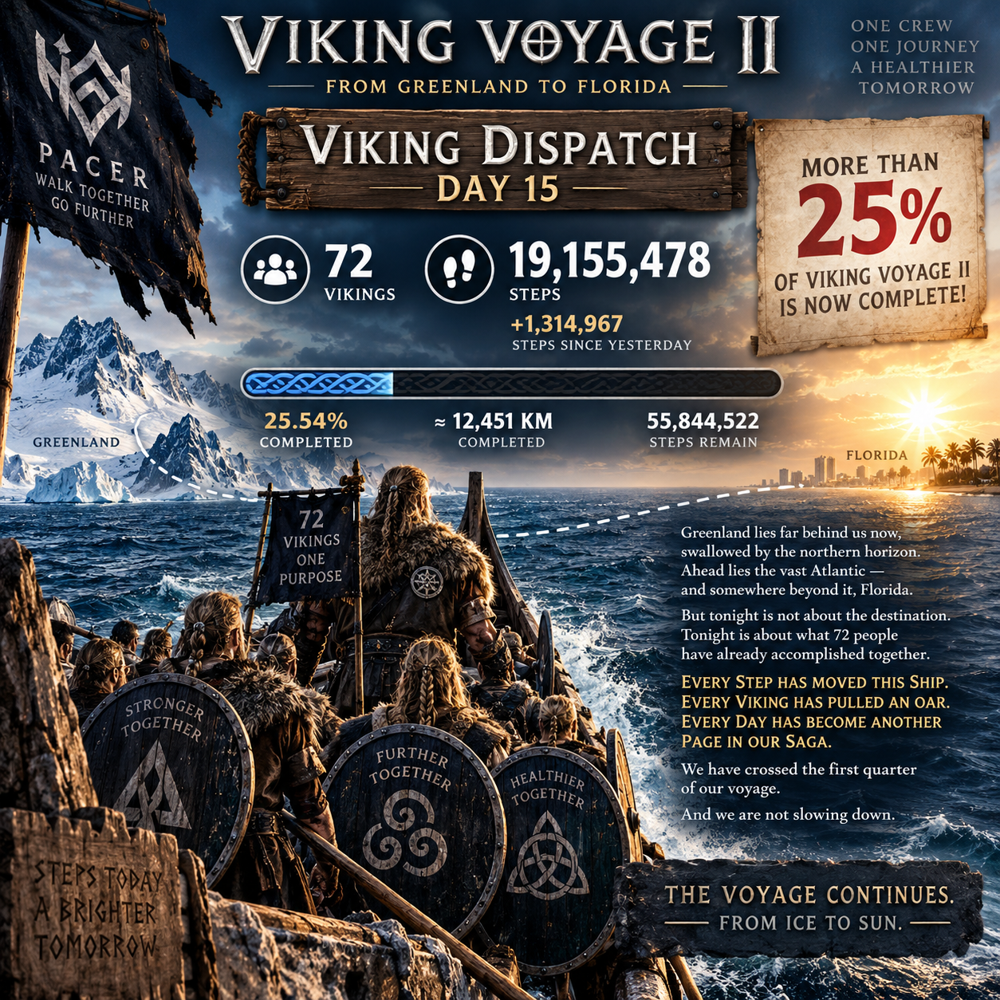

THE VOYAGE ARCHIVE · THE CAPTAIN'S LOG
DAY 15
Chapter I ended as the fleet reached the North American mainland. The first map was complete and frozen into the voyage.

CAPTAIN'S LOG · DAY 15
CHAPTER I COMPLETE.
Seventy-two Vikings carried the fleet to 19,155,478 steps — approximately 12,451.1 kilometres from Greenland.
The North American mainland had been reached. Chapter I was complete, and its route was frozen as part of the permanent record of Viking Voyage II.
THE FIRST CHAPTER IS WRITTEN.
THE VOYAGE CONTINUES.
— Captain Hákon
DAY 15 RECORD
THE MAINLAND IS REACHED
The preserved Day 15 record closes Chapter I: Greenland → North American Mainland. From this point onward, the fleet would begin a new chapter and a new map.